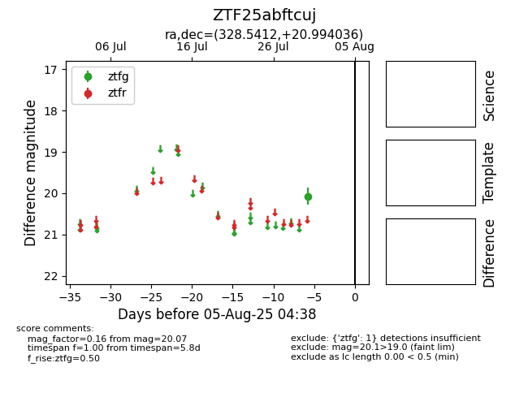

Target ZTF25abftcuj at 2025-08-05 04:38, see:
FINK: fink-portal.org/ZTF25abftcuj
Lasair: lasair-ztf.lsst.ac.uk/objects/ZTF25abftcuj
ALeRCE: alerce.online/object/ZTF25abftcuj
alt names
ZTF25abftcuj (ztf,fink)
coordinates:
equatorial (ra, dec) = (328.5412,+20.99404)
galactic (l, b) = (76.6376,-25.53893)
photometry
last ztfg=20.07
1 ztfg detections
